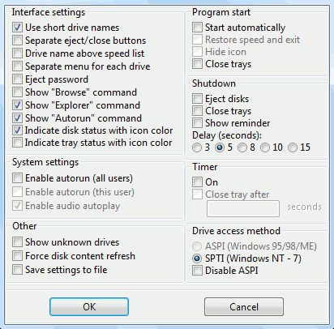
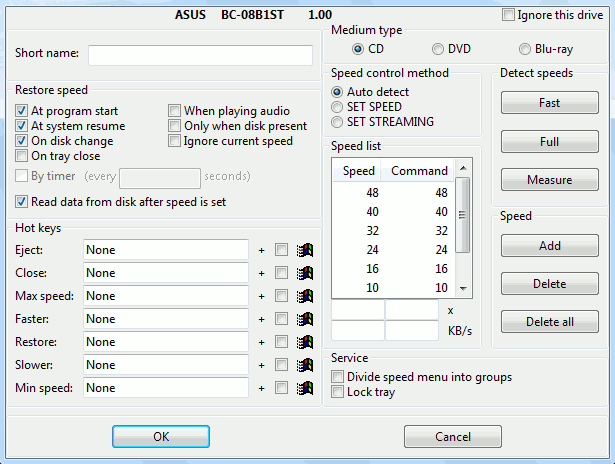

To access the program menu use this icon in the taskbar notification area. The icon may change its appearance in the following situations:
|
- disk inserted; |
| - tray opened; | |
|
- no drives found; |
|
- ASPI or SPTI errors detected; |
|
(blinking) - tray will be closed in less then 3 seconds; |
| - program busy. |
About CDSlow - display the version information.
Help - open the documentation.
Drive information - display the list of detected optical drives with their capabilities.
Reset configuration - delete the program settings from the registry.
Detect drives - refresh the optical drives list.
Drive list - invoke Drive options window
Ignored - the list of optical drives where the option "Ignore this drive" is enabled.
Exit - exit.
The check mark  shows selected speed.
shows selected speed.
The symbol marks current speed.
The symbol ejects tray.
The symbol closes tray.
The Autorun command launches AUTORUN.INF.
The Explorer command opens the disk content in Windows Explorer.
The Browse command opens the disk content window.
For Windows 95/98/ME updated ASPI version is required (recomended version is Adaptec ASPI 4.60). For Windows NT-10 you need to use SPTI drive access method.

Use short drive names - display the short drive names in the speed menu.
Separate eject/close buttons - show the separate button for the tray close action.
Drive name above speed list - display the drive name above the speed list. The drive name is shown below the speed list by default.
Separate menu for each drive - show only the drive names in the speed menu and display a speed list only after the drive name is selected.
Eject password - protect the eject action by password. If the drive option "Lock tray" is on, password will be required for opening a tray.
Show "Browse" command - add "Browse" command to the speed menu (see prerequisites).
Show "Explorer" command - add "Explorer" command to the speed menu (see prerequisites).
Show "Autorun" command - add "Autorun" command to the speed menu (see prerequisites).
Indicate disk status with icon color - change the CDSlow icon color to green when a disk present in the optical drive.
Indicate tray status with icon color - change the CDSlow icon color to red when a tray is open. Don't forget to set "Timer" option to "On".
Enable autorun (all users) - enable AUTORUN.INF processing for all users. Administrator rights is required for changing this option.
Enable autorun (this user) - enable AUTORUN.INF processing for current user. Autorun for all users also must be enabled for this option to take effect. Administrator rights is required for changing this option.
Enable audio autoplay - has no effect on Windows XP and newer windows versions.
Show unknown drives - include a drive in the list even if the drive model can't be detected.
Force disk content refresh - may be useful in Windows 95/98/ME if the drive don't refersh a file list after a disk change.
Save settings to file - export setting to a .reg file.
Start automatically - start the program with Windows.
Restore speed and exit - set the speeds for the all drives once and exit.
Hide icon - don't show a program icon in the notification area. Hot keys will still work in this mode.
Close trays - close all drive trays when the program is started.
Eject disks - eject all disks when the Windows session is finished.
Close trays - close all open trays when the Windows session is finished.
Show reminder - show a reminder message before ejecting or closing the trays.
Delay (seconds): - a delay before the trays autoclose. On Windows XP maximum delay may be increased using registry key HKEY_CURRENT_USER\Control Panel\Desktop\HungAppTimeout (it contains value in milliseconds).
On - test the drives status every 5 seconds, also make available options "Close tray after _ seconds" and "Restore speed" "By timer".
Close tray after _ seconds - an open tray will be automatically closed after the given time interval. The minimum interval value is 3 seconds.
The "SPTI" access method is for Windows NT and newer. On Windows 2000 and XP you will need Administrator rights to use this method.
To enable access for limited user accounts on Windows 2000 and XP use one of these methods:
The "ASPI" method is for Windows 95/98/ME, but may be used on Windows NT/2000/XP with a special driver. Also the Adaptec ASPI driver allows the non-privileged users to access the optical drives on Windows 2000 and XP.
Disable ASPI - don't try to initialize and use the ASPI driver even if it is installed.

Ignore this drive - don't control speed for this drive.
Short name - set custom short name.
At program start - restore the speed for this drive when CDSlow is started.
At system resume - restore the speed for this drive when the system returned from the Hibernate or Suspend To RAM mode.
On disk change - restore the speed for this drive when a new disk is inserted.
On tray close - restore the speed for this drive when a tray is closed from the program menu or by pressing a hot key.
When playing audio - restore the speed for this drive when an audio disk is played in "analog" mode. Should not be required.
Only when disk present - don't set the drive speed if no disk inserted.
Ignore current speed - set the speed even if the drive reports the current speed as low.
By timer - restore the speed for this drive within regular time intervals. You need set "Timer" "On" in the program options, to unlock this option.
Read data from disk after speed is set - read some data sectors from a disk after aplying speed setting. May force the instant speed change.
To include the  key into a combination,
set a checkmark near the corresponding option.
key into a combination,
set a checkmark near the corresponding option.
Choose a medium type for the next groups of setting.
The Auto detect method: the program will detect best method for this drive automatically.
The SET SPEED method: send the SET CD SPEED command to a drive. This method is used by the most drives.
The SET STREAMING method: send SET STREAMING command to a drive. This method is used f.e. for the DVD type disks in the NEC drives.
Insert a ROM data disk in the drive before using this commands if you want to get a correct speed list. Don't use the R or RW disks.
Fast scan - use this method for the "good" drives.
Full scan - try to deal with the various strange drive bahavior.
Measure speed - don't trust the current drive speed value, meassure the real data transfer rate instead.
The speed list for the current medium type.
The buttons for a list editing.
The Add button - add a new speed value to the list.
The Delete button - delete the seleted speed value from the list.
The Delete all button - clear the list.
Divide speed menu into groups - use this option if the speed list is too long.
Lock tray - disable the hardware eject button.
CDSlow can control optical drives not only with graphical interface but also from command line. You can use this command line switches:
/set [drive name][:index]=speed — set given speed. Drive name
may be specified as full name, short name or drive letter. If there is multiple
drives with the same name, you can add numeric index to select one. If drive name
is not provided, speed setting will be applied to all drives. Speed may be
specified as a number or as special value min or max.
/eject [drive name][:index] — open tray.
/close [drive name][:index] — close tray.
/exit — set configured speed for all drives and exit.
/hide — hide taskbar icon. You can contorl running program
with hot keys.
/restart — restart. Replace running program by new instance.
/log — write debug log.
cdslow-en.exe /set min — set minimal speed for all drives and exit.
cdslow-en.exe /set D=8 — set speed 8x for drive D: and exit.
cdslow-en.exe /set ATAPI=max — set maximal speed for 'ATAPI' drive
and exit.
cdslow-en.exe /eject "ATAPI iHAS124 C LL0E":2 — open
second 'ATAPI iHAS124 C LL0E' drive tray and exit.
(C) Vadim Druzhin
22 February 2021